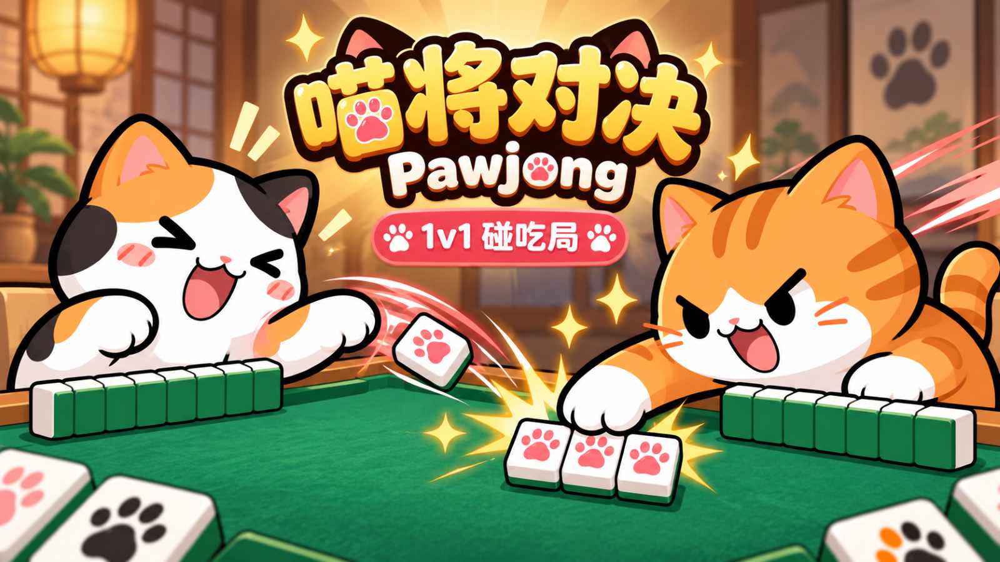
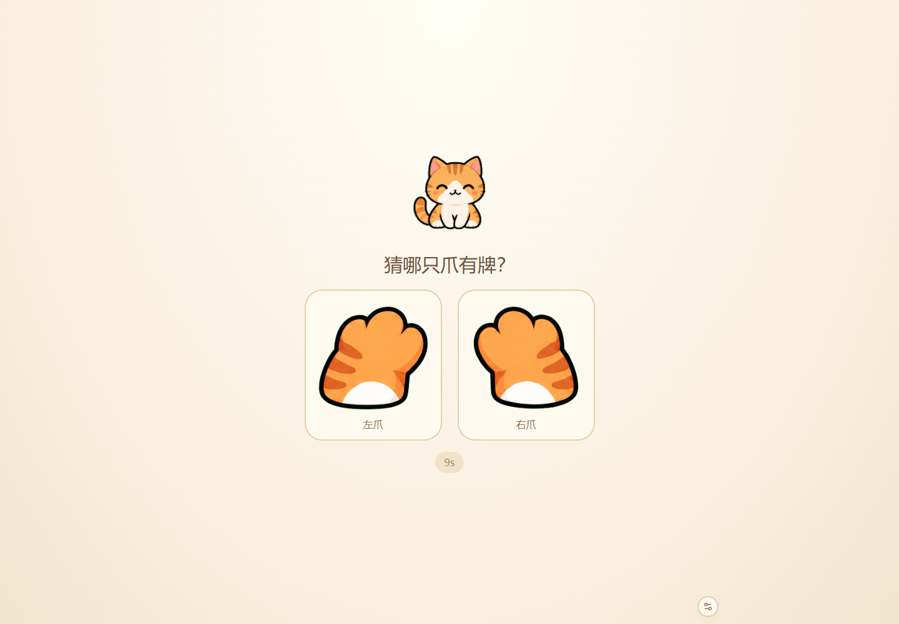

即时计分
对子、顺子、刻子等成组后立即入账，连续主动成组提升倍率，从 ×1 逐步至 ×2。得分不必等待整局结束。
把麻将成组的满足感，拆成每一手都能得到反馈的短局对抗。

我负责玩法目标、规则取舍和迭代方向；AI 辅助代码、素材与文档制作，最终内容由我筛选和调整。
对子、顺子、刻子等成组后立即入账，连续主动成组提升倍率，从 ×1 逐步至 ×2。得分不必等待整局结束。
用对手当前公开牌与自己的手牌组成吃、碰、杠，获得额外收益；抢牌不消耗主动回合，也不取消对手已经得到的分数。
双方争夺一项公开目标，例如抢先三顺；个人路线目标提供持续方向。短期凑牌与长期路线之间形成取舍。
选择蓄势换手，本手不计分并中断连击，但为下次主动成组增加 0.5 倍率。换牌有代价，也保留下一手期待。
早期版本采用每局三枚鸣牌令和终局统一乘番，互动机会与得分反馈受限。
当前版本按批次允许一次抢牌，整局不限总次数；得分、满组、连击和目标奖励即时呈现，演出不阻断输入。牌河并列显示公开牌与配牌，便于回看。

已提供本地人机玩法、规则和计分说明、得分反馈与结算再战。好友直连受网络环境影响，作品展示优先使用人机入口。
后续记录首次得分时间、平均对局时长、抢牌频率与主动再战意愿。当前倍率与计时属于原型参数。